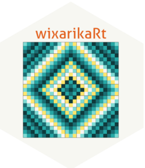
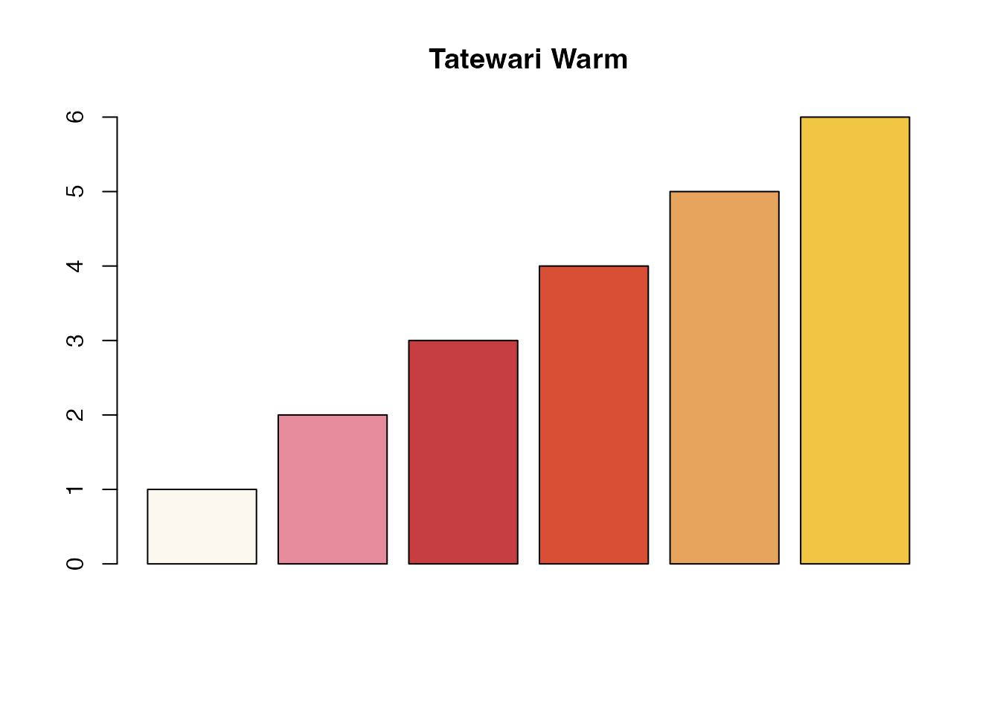
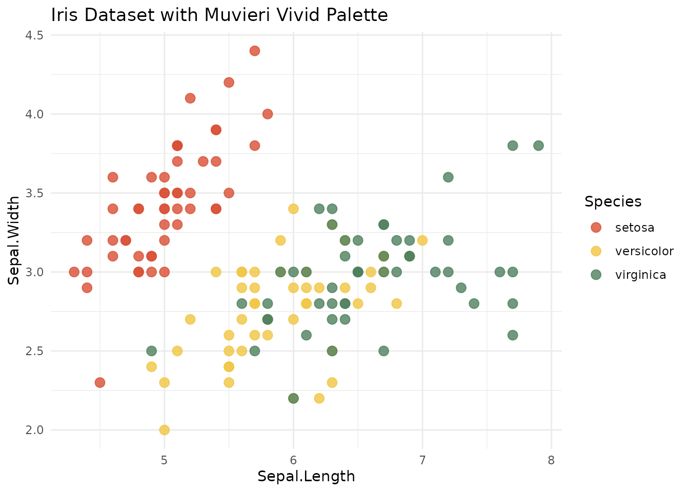
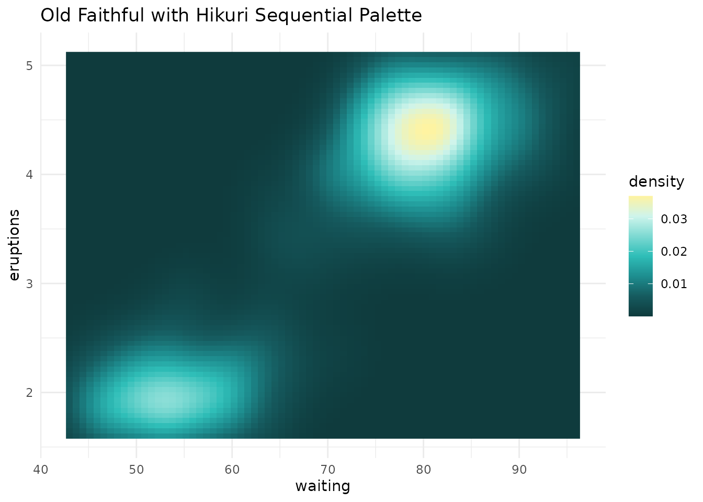

Getting Started with wixarikaRt
Source:vignettes/introduction-to-wixarikaRt.Rmd
introduction-to-wixarikaRt.RmdIntroduction
wixarikaRt provides color palettes inspired by the Wixarika (Huichol) people and other Indigenous peoples of Mexico. These palettes bring the vibrant colors and deep symbolism of Indigenous art to your data visualizations.
Quick Start
Using a Palette
# Get a palette
colors <- wixarika_pal("tatewari_warm")
colors
#> [1] "#FBF8F0" "#E68B9B" "#C73E42" "#D84F35" "#E7A45D" "#F0C542"
# Use in base R
barplot(1:6, col = colors, main = "Tatewari Warm")
With ggplot2
ggplot(iris, aes(Sepal.Length, Sepal.Width, color = Species)) +
geom_point(size = 3, alpha = 0.8) +
scale_color_wixarika("muvieri_vivid") +
theme_minimal() +
labs(title = "Iris Dataset with Muvieri Vivid Palette")
ggplot(faithfuld, aes(waiting, eruptions, fill = density)) +
geom_raster() +
scale_fill_wixarika("hikuri_seq", discrete = FALSE) +
theme_minimal() +
labs(title = "Old Faithful with Hikuri Sequential Palette")
Cultural Context
Each palette is inspired by sacred elements of Wixarika culture:
- Tatewari (Grandfather Fire): Warm reds and golds
-
Kauyumari (Deer Spirit): Forest greens and sky
blues
- Hikuri (Sacred Peyote): Deep teals to bright yellows
- Nierika (Spiritual Portal): Balanced earth and sky tones
wixarika_pal_info("tatewari_warm")
#>
#> tatewari_warm
#> Name: Tatewari Warm
#> Type: sequential
#> Description: Inspired by Grandfather Fire, with warm reds, oranges, and golds